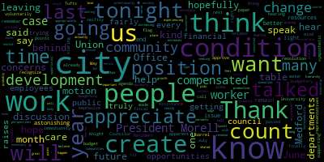
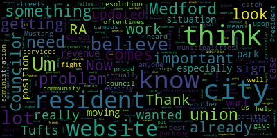
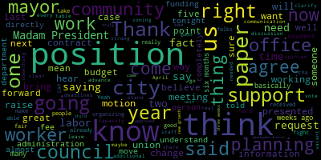
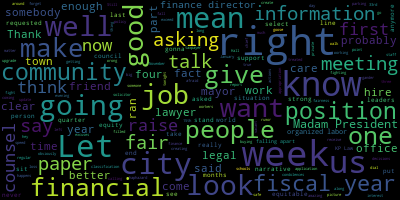

AI-generated transcript of City Council 11-15-22
English | español | português | 中国人 | kreyol ayisyen | tiếng việt | ខ្មែរ | русский | عربي | 한국인
Back to all transcripts
[Morell]: The regular meeting of the city council November 15 2022 is called to order. Mr. Clerk, please call the roll.
[Hurtubise]: Vice President Bears Council carry yellow Council Collins Council night. Councilor Scarpelli, Councilor Tseng President Morell, seven presidents are absent meeting is called to order.
[Morell]: Vice President Perez. On the motion from Vice President Perez to take 22-569 and 22-561 under suspension, seconded by Councilor Tseng. All those in favor? All those opposed? Motion passes. Where is... All right, so 22-561 appears after. Okay, 22-569. offered by Councilor Collins, Vice President Bears, and Councilor Tseng. Whereas, over a super majority of Tufts residents assistants employed by the Tufts Office of Residential Life and Learning, ORLL, have signed union authorization at cards indicating their intention to form a union named the United Labor of Tufts Residents Assistants and engage in collective bargaining with the university through affiliation with the Office of Professional Employees International Union, OPEIU Local 153, Whereas Tufts residential assistants perform a role that is essential to the university and to residential life on campus yet receive no wages nor fringe benefits beyond a room credit as part of their compensation package and are required to attend over two weeks of unpaid training annually. Whereas resident assistants are seeking fair compensation, better treatment by supervisors and ORLL, and a clear contract with better articulation of expectations and responsibilities, whereas student workers of color and first generation slash low income student workers are disproportionately represented in the resident assistant workforce, making the fair treatment and compensation of RA's integral to Tufts University's stated commitment to equity and support for marginalized groups, whereas union representation and collective bargaining would allow resident assistants to have a say over the terms of their employment, providing an avenue through which to seek adequate compensation and clarity in the employment contract, whereas the spread of student worker unionization efforts represents an important piece of strengthening the labor movement nationwide. Be it resolved that the Medford City Council express its support for the Tufts Resident Assistance Union and calls upon Tufts University to voluntarily recognize their unit. Be it further resolved that a copy of this resolution be forwarded to the Director of Government and Community Relations at Tufts University, and the Director of Residential Life. The motion of Councilor, Councilor Collins.
[Collins]: Thank you, President Morell and thank you. Councilor Knight, for your motion to approve. I think this resolution speaks for itself. I also wanna flag that we have a few representatives of the Resident Assistance Union here tonight to speak. And just to emphasize that this is a call for Tufts University, my alma mater, to voluntarily recognize the union. We hope that they will do so swiftly as it's the right thing to do. Thank you.
[Morell]: Thank you, Councilor Collins.
[Tseng]: As one of the two main municipalities on this side of Tufts campus, I think it's incumbent upon us as elected officials to help those who are seeking fairness and equity in the work that they perform. which is why supporting the RA union is so important for our city council to do. I think this resolution itself already walks through a lot of the fundamental reasons for why we should express support for the Resident Assistance Union and call upon TOPS to voluntarily recognize the union. Um, but I also believe that, um, the stories behind it are as powerful and as important as well. Um, a lot of my best friends growing up, they went to Tufts university and worked as RAs. And I, I, you know, I, I hung around, uh, campus sometimes just to, just to catch up with them. And I saw that, you know, the hours that they were putting into that work and. the compensation that they received. And oftentimes they would talk to me about how it didn't seem fair. And so I believe that such a step, I really have to congratulate the members of the RA union for being so bold as to fight for their own benefits and fight for what's right. And I wanted to shine a spotlight on their community petition, which is out there and open for anyone to sign. If you search up Tufts RA Union, you'll be able to find the link to attach your name, sign your name to the petition. So thank you very much.
[Morell]: Thank you, Catherine. Vice President Bears.
[Bears]: Thank you, Madam President. I've spent the better part of the last 12 years in student organizing and worker organizing. And some of the most powerful work that we've been able to do is student worker organizing. So I'm a huge supporter of the work that you're doing. You happen to come up with a great name, Ultra. Pretty good stuff. And I was also the beneficiary during my time at UMass Amherst where our RAs were unionized. And I know that they were able to fight hard for good contracts that really took a fair look at the amount of hours that they were putting in, the on-call status and all the other things RAs face on campus. And I know that I was proud to support those campaigns when I was a student and work with that union in years after that as well. So I think it's great that you're doing this. It's tough to just voluntarily recognize it. I think you said you had two-thirds of people had already signed a card. I mean, you know, you got it. You held an election. You're going to win it. So let's recognize the union, bargain a fair contract, and make sure you get what you deserve. So thank you for being here, and we're glad to support you.
[Morell]: Thank you, Vice President Bears. Any further discussion from the council?
[Unidentified]: Would anyone like to come up and speak? please just your name and address for the record.
[SPEAKER_01]: Hello, my name is Julie Francois. I'd like to say thank you very much Councilor Collins for introducing this resolution and thank you to the City Council for your time. We are undergraduate student workers employed as residential assistants at Tufts University Office of Residential Life and Learning. Over the past several months, we have organized our workplace as a union under the Office of Professional Employees International Union Local 153. To date, 122 residential assistants, totaling over 85% of the workplace, have signed authorization cards indicating our desire to form the union and begin collective bargaining with the university. And on last Wednesday, we delivered our petition for voluntary recognition to university administration. As RA, we provide essential services to Tufts, upholding a crisis and lockout response line for residents at all hours of the night and on weekends. We also host programs to foster community in our residence halls and perform administrative tasks vital to Tufts residential operations. Despite the valuable work that we do for our employer, RAs receive no wages or any fringe benefits beyond a room credit and are required to attend 80 hours of unpaid training annually. To cope with this inadequate compensation, many of us seek second or third jobs on or off campus to meet our needs. RAs have further experienced a lack of flexibility in scheduling while in turn being expected to be readily flexible to the requests of our supervisors. Further, we have little to no say over our employment contract, which contains and ambiguities, and is subject to unforeseen changes at the discretion of the Res Life office. These issues are uniquely amplified by the over-representation of first-generation and low-income students and students of color among RAs. The university has committed to ensuring equity for its marginalized communities, but has fallen short on this duty with regard to residential assistance. To summarize, through unionization, we are seeking fair compensation, better treatment, and a real voice in our jobs, and we expect Tufts to voluntarily recognize our union as part of its commitment to its students and workers. We also want to be clear about why our union efforts warrant the attention of Medford. As a significant economic presence in the city, how Tufts treats its workers and has potential to impact working conditions across the area. We further note, should we be successful, our union will not only benefit its members, but also serve to increase union density and build worker power across Tufts campus and throughout the city. Even more broadly, we find ourselves in a promising moment for labor, with workers across the country organizing to improve their lot. And the potential for a renowned labor union is now on the horizon. As a concentration of economic power that the labor movement has always fought against continues to erode the ability of the vast majority of the country to work and live with dignity, and as many of the rights won with the support of the labor movement over the past century come increasingly under threat, now is the time to stand with organizing workers of all kinds. We thus hope that the city council will support our union of student workers as we collectively exercise our rights When we asked the city council, make it clear to tell us that the city of Medford expects employers to respect its workers and their will. Thank you very much for your time. Thank you.
[Morell]: Anyone else who would like to speak on this paper? Seeing none, on the motion of Councilor Knight, seconded by Vice President Bears. All those in favor? Aye. All those opposed? Motion passes. Vice President Bears.
[Bears]: Can we take a two minute recess to take a photo with our union folks and show our support?
[Morell]: Anyone opposed to that?
[Unidentified]: Sure. Great. Take a two minute recess. Oh, okay. Squeeze in a little bit. Fabulous.
[Hurtubise]: Yeah, I was going to tell you to take the mask off. There you go. All right. Here's a couple with this phone. All right. Let's see if we can squeeze more people in this way.
[Unidentified]: Steve, Councilor Tsengh, squeeze in more, we're doing this vertical. Anybody else got cameras? Thank you.
[Morell]: 22-561, to President Nicole Morell and honorable members of the Medford City Council from Mayor Brant Olungokorin. Regarding appropriation request for finance director, I respectfully request use of available funds in the amount of $1,205 in finance salaries, account 010-135-5110, to provide for a step increase for the finance director associated with the request before you to change the finance director position from a CAF 20 to a CAF 21, paper number 22-023. The finance director was hired at a CAF 20 step five and is due to receive a step increase on the one year anniversary of his hire date, April 25th, 2022. This appropriation request provides for an increase in weekly salary for the position of CAF, for the position to CAF 21 step five, starting April 23rd, 2025 through the end of FY23. This appropriation will be funded using available funds in the finance salaries account that have accumulated due to the vacancy and the assistant finance director slash budget manager position. Ian Nazarian is available to speak to this request. as well as paper 22-023 and answer any questions you may have. Respectfully submitted, Breanna Lungo-Koehn mayor.
[Scarpelli]: Hi Madam President, thank you. Again, I'm gonna stand with my previous stance that anything we do with any money papers have to be halted until we get definition of questions we've asked that clearly affect our decisions moving forward financially in hopes that we understand what the forecast looks like moving into the next budget season. don't know what's going on financially. I believe our finance director has already stressed that. There's too much going on right now to get a hold of it, a hold on it. And then again, we have our union representation in the audience again. And again, when this room is full with all of our union members, everybody stands tall about these money papers, making sure we're showing the true support. Every penny that goes out, making sure that you handle the people that have been working without a contract and are at a stalemate right now. And until that's done, I will not vote on any money paper moving forward. So this is something I will not support. And I believe anything dealing with salaries, especially when we have questions out there that haven't been answered, that we've been waiting for a legal response from that gave us guidance, whether that, you know, what we've done and what the mayor has done in the past and city administration's done in the past with upgrades and not getting a true understanding if it was done, when it was done without our knowledge, was it against our own city ordinances, which we believe they were. So, This is a trend, unless we figure out a way to stop it. I also understand the other side of this, saying that we can't move forward unless we have these positions in place. But you know what? There aren't too many offices full anyway in the city. And it seems like we're just piecemealing things and nothing is really truly happening to support our union brothers and sisters. So thank you.
[Morell]: Thank you, Councilor Scarpelli. Vice Mayor Bears.
[Bears]: Thank you, Madam President. Yeah, I think specifically as pertains to this paper, you know, we received a letter now three weeks ago outlining some potential opportunities for us to receive information regarding the city's finances and budget, but we haven't received any further communication. I don't believe we've received any requests to schedule any meetings or have warrant articles placed on the agenda or anything of that sort. So, you know, to the point that we've been making as a council for I can't even say how long at this point, at least 11 months, if not 36 months, we really need that information. And that's the role of the finance director. So, you know, I'm certainly open to hear more about why the folks think this is needed, but given the fact that we still haven't had those meetings and discussions or information presented to us, I don't think I would support moving forward with this paper at this time. And we also got a legal opinion that this paper specifically will require five votes. So I'll leave it at that. Thank you.
[Morell]: Thank you, Vice President Ferris. Councilor Caraviello.
[Caraviello]: Thank you, Madam President. The $1,205, is that per week, or is that just over for the rest of the year?
[Morell]: Chair Stephanie Zarian. It's kind of vague on the amount.
[Nina Nazarian]: Thank you, President Morell. And to answer Councilor Caraviello's question, can you hear me okay, Councilor? Yes. Thank you. To answer your question, Councilor Caraviello, that would be the total annual amount that would be essentially from when the higher date of the finance director began, prorated through the end of that fiscal year. So it's the total increase, or I should say, the total impact to the FY23 budget alone, above and beyond what's been previously appropriated. Does that make sense?
[Caraviello]: So his pay will get raised an additional $1,200, correct?
[Nina Nazarian]: It wouldn't raise an additional $1,200?
[Knight]: I'm afraid of the classification. He didn't give him a step. So he's getting like a $20 a week raise. No, because he's going up from a $20 to a $21. So it's probably like a $300 a week, $400 a week.
[Caraviello]: OK, well, the same thing. If it's $1,200, that's like $20 a week. Right.
[Knight]: The difference between what was budgeted for this fiscal year and the upgrade. Thank you. OK.
[Morell]: Thank you, Councilmember Falco. Any further discussion from the council?
[Knight]: Can the chief of staff explain to us when exactly we are gonna receive any of this financial information that we requested in January of 2020 at the first meeting of this Medford City Council? And I believe if we look at the agenda here, the 33rd, we're now at the 33rd regular meeting at the first meeting, we requested quarterly financial updates. And we also requested that we receive monthly copies of the Warren articles with 33 meetings in. We've never ever once received any of it. But yet, week after week, we are asked to make votes on financial appropriations, on spending, on upgrades, on items that really revolve around finances in this community. And I don't think it's fair to us that you're gonna keep us here in the dark and make us beg for information that we've been asking for for the better part of a year now, 33 regular meetings. It's not fair to us. It's not fair to us to put us in a position where you're not going to give us the information and the tools necessary to make good decisions. So here we are again, treated like mushrooms, right? Put them in the closet, shut the lights off, throw one on them and see what grows. Yeah. Cause that's what it is. I mean, ultimately at the end of the day, that's what's happening here. You know, week in and week out, it's the same reiteration. We haven't asked for much. We've said the same thing. Give us a lawyer. We had to fight for that for nine months. Still don't have one. 10 months we've been asking for just simple, basic financial information so that we could make good financial decisions. We still don't have that. So I'm at a loss. The city's falling apart. The city's falling apart. Our schools aren't safe. We don't know what the financial picture is. We have a finance director who told us right now that he can't give us an update because the reconciliations are off and the information that I give you is probably gonna be wrong. But we're being asked to spend week in and week out. week in and week out. I'll say it again. The city's falling apart. All right. We don't know what our financial picture is. And our schools aren't safe. What more is there? What more is there? A strong financial background, a strong, stable, local finance department, you know, strong public education system. We're failing in both aspects. At least I feel as though we are, because I'm not receiving any information to the contrary. Thank you, Madam President.
[Morell]: to provide an update on when we might be the council might be receiving those financial papers.
[Nina Nazarian]: Thank you, Madam President and through you to Council night. As was stated by our finance director, as a result of the communication that was presented, and a city council agenda item. The finance director has stated that that information preliminary first quarter reports would be available and provided by mid November it is mid November so I anticipate that information will be forthcoming very soon to the city council. As far as the information being preliminary, as was stated by the finance director, the finance director because the absence
[Morell]: Point of, sorry, point of information, Councilor Knight.
[Knight]: So point, it's first quarter for this fiscal year, all right? But what about the fiscal year that just passed? The one that we've been asking for for that fiscal year too, all right? So you want to talk about the first quarter of this fiscal year? That's all well and good, but we've been asking for this for four, four, four quarters now, three from the previous fiscal year and one from this fiscal year.
[Morell]: Sorry, Nina, please continue.
[Nina Nazarian]: Thank you, Madam President. Again, through you to Councilor Knight, we have had a vacancy. I know the Council knows this, but we've had a vacancy in the position of the Finance Director. We subsequently had a vacancy in the position of the Assistant Finance Director and Budget Manager, which has now been filled. I'm happy to report on that. We have a tremendous asset that's come on board. We're looking forward to Courtney Cardello getting her feet planted on the ground. She's already begun discussions. I'm in meetings with her and with the Finance Director to begin discussions on next year's budget at this point, those are preliminary, but we're working very hard in a circumstance where there are very few staff members in the community or the public at large who are qualified for these kinds of positions. And I'll just say one other thing that's really important on this specific topic, and that is the state actually recognized this is the shortage that exists with finance professionals and is instituting a program to develop and recruit and train finance professionals. So again, this is more of the same issue that we faced for quite some time with regard to a shortage. We wanted to make sure that when we hired a finance director, we hired a qualified finance director and the same for the assistant finance director. We are essentially basically in this process where we're struggling, where we had been struggling. Happy to announce we have filled all of our positions at this point. trying to find the qualified staff. And now that we've found them, I'm sure that things will be moving more rapidly and there will be a freer flow of information through this process. So all I can say is we've been struggling with finding qualified candidates and we have since found them, which is great news. As far as the assistant city solicitor position, we're interviewing for those right now. It takes time, we're in a difficult labor market. I'll end there and I won't attempt to address all comments. Thank you for your time.
[Knight]: It appears that we're the only people in the world that can't hire 100 people that want to work $100,000 a year jobs. You know what I mean? It's crazy, huh? Imagine that. Manhattan, Mass, the only city in the world that can't hire people into jobs that get paid $100,000 a year. You know, we had a finance director. We had a very capable finance director. He ran out of town, right? Ran out of the town to do discriminatory actions. We had one. We had a finance director. We weren't in this situation. We created this situation that we're in. The administration's actions caused a reaction. That's why we're in this situation. It's not because of a lack of interest or the inability to hire. We had somebody in the job, but we ran out of town. And then for 10 months, because we ran that person out of town, this city was left with its pants down. And the taxpayers in this community are the ones that are suffering. So we can sit up here and we can make all the excuses in the world and talk about, well, this happens over here and this happens over there. Or we can be leaders. We can be leaders and we can say, hey, listen, this is the problems that are at hand. Let's tackle them and let's fix them. Let's not make excuses for them and they go cut ribbons every time something goes wrong.
[Unidentified]: Thank you, Councilor Knight. Any further discussion from the council? President Bears.
[Bears]: Just to clarify, this would not go into effect until April 23rd of 2023, April 23rd of next year.
[Morell]: Madam Chief of Staff, can you confirm that this wouldn't go into effect until April 23rd of next year? Sorry.
[Nina Nazarian]: Thank you, that would be correct. It would be April 23rd of this coming April 23rd, essentially, because that would be one year from the date of hire in accordance with the CAF system.
[Morell]: I think we have an error in our paper.
[Bears]: The paper does say 2025. Oh, thank you.
[Nina Nazarian]: That would be a Scrivener's Hour, yes. It would be 2023. Thank you for catching that.
[Bears]: Yeah, I mean, again, I've heard what was said. It is mid-November, and the documents aren't in front of us. Since this wouldn't even go into effect until next April, I would motion to table. I'm fine with that, too, if we want to correct, amend the paper, ask the mayor to amend the paper to reflect the correct date.
[Unidentified]: What would be the process for that?
[Hurtubise]: I would, not having done this before, I'm going to jump to a couple of conclusions that ultimately we'd probably have to vote to refer the paper back to the mayor and request a correction.
[Morell]: members of the public to step in as Aaron for you.
[Nina Nazarian]: Thank you. I just the only thing I'd like to add as part of this discussion is Councilor and I made a comment regarding $100,000 jobs. I just want to note that the city of Somerville has had several city solicitor positions posted to the Mass Municipal Association website for what seems to be several months years. I believe they have five or six vacancies at present. I just point of information to show that there is a genuine qualification issue that exists out there. And I can't comment on personnel matters. So I won't even attempt to comment on the other implication or matter that was implied with the former finance director. Thank you.
[Knight]: that served in an acting capacity, and again, was also kept in the dock, well, hundreds of thousands of dollars were funneled to KP Law to perform the legal services, KP Law being the mayor's private legal counsel, not the city's counsel, not legal counsel that works in the interest of the taxpayer, but legal counsel that works under contract for the mayor, not for the residents of this community. So when we had a city solicitor that sat in the city solicitor's office, which is now vacant, we have nobody in there except for an office administrator, No lawyers, no lawyers at all in City Hall. No lawyer in City Hall, none. KP Law on speed dial, probably $800 to $500, $800 an hour. And we're calling them on speed dial. We have an office right there, vacant, with two positions that probably total close to $200,000. So, well, we can look over in the city of Somerville and say, well, they're doing such great things. I mean, look at Pothouse Circle, for example, that doesn't make it get vertical. I don't know what does, you know what I mean? But I'd like to compare ourselves again, to be leaders and to be people are the first, not followers. So I really don't care what they're doing next door. I care what we're doing here and I know we can do a better job here.
[Morell]: I think that's right. Vice President Bears.
[Bears]: Just to clarify my motion, it would be to refer the paper back to the mayor's office for amendment of the typo.
[Morell]: Any further discussion from the council? Members of the public who wish to speak? So on the motion of Vice President Bears, seconded by Councilor Caraviello. All those in favor? All those opposed? Motion passes. Do I have a motion to revert back to regular order of business? On the motion of Councilor Knight, to revert back to regular order of business, seconded by Vice Mayor Bears.
[Unidentified]: All those in favor?
[Morell]: All those opposed? Motion passes. Announcements, act weights, remembrances, reports, and records. 22-567 offered by Councilor Caraviello, be it so resolved that the Medford City Council send its deepest condolences, I'm sorry, deepest and sincere condolences to the family of William Matarazzo on his recent passing. Mr. Matarazzo is the father of Janice DePace in the city's clerk's office. He served his country during the Korean War as a Marine and was active in youth sports. He was the man of the year for the sons of Italy. His presence in our community will be missed. Councilor Caraviello.
[Caraviello]: Thank you, Madam President. Another sad passing, Gary. We all know Janice from the clerk's office, and her dad was a well-respected man in our community. He was very active in youth sports. He was Man of the Year with Sons of Italy at one time. But you'd always see him around town, always have a happy face, and always a good, pleasant man to talk to. They say it's another veteran that's passed away in that community. So just condolences to his family.
[Morell]: Thank you, Councilor Caraviello. Any further tonight?
[Knight]: Yes, Madam President. Thank you very much. I mean, through you to the family. I just want to offer my sincere condolences as well. Mr. Matarazzo was a friend, a friend. My father's known each other for a long time through the membership. Um, I had the pleasure to meet him on a number of occasions. Janice and Frank have been good friends for a long time, and I'm very sad they heard that loss. So I just want to join Councilor Caraviello in expressing my condolences personally.
[Morell]: Thank you, Councilor. Any further discussion? On the motion of Councilor Caraviello, seconded by Councilor Knight.
[Unidentified]: All those in favor? Opposed? Motion passes. Please rise for a moment of silence.
[Morell]: 22-568 offered by Councilor Caraviello. Be it so resolved, the City of Medford proclaim that Thursday, November 25th, 2022, be named Michael Babe Kelowna Day in the City of Medford. Babe Kelowna scored a record of five touchdowns and 242 yards rushing in a Thanksgiving Day football game, a record that still stands 50 years later. Babe Kelowna will be traveling from California and will be honored at Fenway Park before the Medford Malden Thanksgiving Day football game. Councilor Caraviello.
[Caraviello]: Thank you, Madam President. Madam President, I happen to be there at that game. uh, uh, uh, uh, uh, 50 years ago. Uh, when, when, when, when, when see if method was a strong football time, um, big corner was a strong athlete for the city of Medford, uh, throughout his career, uh, uh, comes from a good family in Metro, but his record, he broke a record, uh, that, uh, Kenny right out held for many years. Uh, and he broke it and this record, uh, still stands 50 years later. So, uh, babe, babe and his family are coming here. from California, and they're going to be honoring him before the Metford-Mauldin game at Fenway Park. And I think Chris is here. He may want to say a few words about the game. It's a nice honor. And like I said, it's a record that's held for the last 50 years.
[Morell]: Thank you, Councilor Caraviello. Any councilors who wish to speak on this? Mr. Murphy? Name and address, please. It's been a while.
[Chris Murphy]: Chris Murphy, uh, 51 shared now. I'm also the president of the Method Football Associates, which is the booster club football team. I just want to come up with being a week before the game and just give a couple quick things about the game. Um, I'm happy that constant cover yellow brought this up. The Fenway is letting us honor to, uh, great alumni, Miss Kelowna as well as Mrs. and pal. They're gonna be honorary captains for the team. Those are no mystery and pal. He's basically the godfather of Mustang Nation at this point. So we're going to get the schools having the pleasure of honoring two great guys who have done a lot to build on the history of this team. We have a lot of great things going on with the school and with the team also in the week. Tomorrow night they're doing a unified flag football game at McDonnell Field at four o'clock tomorrow with the Medford Malden school students. The school team will be there also to cheer them on, help them out. We're also going to be doing a sub-varsity game after that at 5.30, which has become kind of like a little tradition. The week before our sub-varsity, our more sophomores and freshmen will be playing Malden sophomores and freshmen. Then we also have a lot of dinners coming up with the Malden Rotary Club. We're doing our tradition dinner, Sunday with the team and then John Burley's is doing their dinner next week and then the pep rallies next Tuesday. I just wanna remind the people, the public, that you have to buy your tickets for the game in advance. They're not gonna be selling tickets at the door. You can go to the Red Sox website on their ticket section and buy them their $20 a ticket. That gets you into both games as well. We are playing the second game. We're hoping for like a 7.30, 7.45 kickoff, depending on how long I believe it's O'Brient and Boston English game, which is gonna be played before Oscos. This is really an exciting thing. I mean, this is the 135th time that this game is gonna be played. It's been the third oldest in the country. First game was played November 25th, 1889. It's been played every year since 1891. So there's been a lot of great history with this game. I'm glad that this is going to build off that history. The record doesn't show the great strides that this team has made. They have an amazing coach. John Curley has done a wonderful job with this team these last four years. This team is a young team, a lot of first-year starters. They've done only two wins right now, but they've been in a lot of games this year. We're hoping to end it on a great note. Hope to see you all there. Hope to see a great presence from the city and go Mustangs. Mr. Murphy, yes.
[Bears]: You know the words for the Mustang fights, huh?
[Chris Murphy]: Oh yes. And the kids know and hopefully we'll be singing that a lot next Tuesday at Fenway. A lot of great things will be on podcast. Maybe they're covering the games are going to have a great. hosting, there's gonna be a lot of coverage on their stuff. I know they have to do with the athletic directors and they're gonna be at a couple of the things we have leading up to. So people can go on their site to check out some of the build up to this game.
[Scarpelli]: I can't imagine. Thank you. While you're here, Chris and talk about the football team. Um, what I find amazing is we're talking method. Maldon football game and its history and how much pride that we have is former Mustangs and what it means to everybody in Medford that that whether new or old, understanding how old this game is and what it means to us. So it is important. But I also wanted I've noticed something that I haven't seen in a long time here. Um, the football team were raking leaves this past weekend. Yep.
[Chris Murphy]: They were out there. Uh, we did, uh, we got about six people that requested us. I did have to teach a couple of kids how to rake a leaf. Uh, there was, uh, definitely some teaching going on, but yeah. Um, and it just, I go back to how awesome of a coach John Curley's baton is. Um, we sat down, uh, a couple of days after he was hired and. He said, I want to make them good players, I want to make them good students, and I want to make them good human beings. And that is definitely a tough thing, not being able to do a lot of stuff with COVID, now that it's kind of eased up, we'll be able to go out there and do these things. And you see them at cheerleading competitions, and at the unified basketball games, and all this stuff. They've become very visible in the community, and they've done a great job with, you know, I always say you're a student athlete second, but you're a model citizen first. It's one thing I always stress to them. They've taken that to heart and we've gotten them out there and they've done some great things.
[Scarpelli]: Well, that's my point. I think that what we're saying is, I know you brought up the record, but eliminate the record. huge number of kids now, I think it's 60, 70 kids that are playing football. We have, we have, if you see them, it's volunteering at all the recreation events. You see them volunteering at raking, raking people's yards and needs assistance. You see them when, uh, push pulling on the pushing for their, their, um, pro other programs, whether it's a, whether it's a show in the school or whether it's another athletic event. So I give our Medford Mustangs a lot of credit. I think it's truly what it's really meant to be. The old days of, you know, the jocks having some sort of persona. I commend our, that stigma has now disappeared, at least in my eyes. I think that we are one big family at Medford High School and And I think what keeps them together right now, especially through tough times, are the kids. I mean, the kids have really stood strong with each other and got them through some tough times. So I commend Coach Curley and your organization.
[Chris Murphy]: And I wouldn't be, I wouldn't be remiss to sit here and say that John and, John and I are both kind of products of you. And you, I would say that, you know, the 20, 24 years ago that I met you and you and Coach Pear got together and said, You're not just soccer players and football players, you guys are Mustangs and got us out there. That's rubbed off on John, that's rubbed off on me, and now, gratefully, you're, 24 years later, it's rubbing off on the future generation of Mustangs.
[Scarpelli]: Yeah, God, I just remember that. Actually, we traded right before Thanksgiving. Yes, we did. Coach Pierre took a penalty shot on the soccer field, and I took a hand off. And I think Chris lit me up.
[Chris Murphy]: I will say when you talk about the tradition of this game, I mean, not to knock, this is the first, I think, city council in the last seven decades that hasn't had a football alumni on it. Councilor Falco, Councilor Miyako, Councilor Skerry. Freshman, I'm sorry, a freshman, we have a freshman football alumni over here. Councilor Caraviello doesn't have that Caraviello blood in him, so we still have that Caraviello blood going through it. And I will say, I tell people this, the four greatest feelings in my life have been the birth of my children, the day I married my wife, and beating Malden. I'm not going to tell you what order they are. I'm happy that this rivalry is starting to take a good shape and that we have this great opportunity to build some excitement for the program.
[Bears]: Thank you, Madam President. It sounds like not only great rivalry, but great sportsmanship, given that they're going to be doing some unified stuff in advance as well, which is fantastic.
[Chris Murphy]: Yeah, I mean, it's, you know, we have two great, the two FI directors have been awesome with trying to build a great week leading up to this. And yeah, there is that, you know, I hate to use the word hatred, but there also is that, you know, respect for the tradition of this game and what it means to not only us as Mustangs, but also to the Golden Tornadoes. And I've been president of this organization now for about eight years on the board for the last 10 or 11. And I just have, to continue being part of this game every year, it's just, it's amazing. My kids, I was able to take my son to his first Method Molding game last year. My daughter, one of our annual traditions, we take a photo at every first home game, and she loves it. She's a huge fan, and it brings me back to, and I'm sure a lot of you here remember your dad taking you to your first Medford-Malden game, and I'm glad that I've been able to do that. I mean, like I said, 100 and 135 games is, you know, we have a, I believe one kid, Justin Marino is a sophomore. He's going to be the third member. He's a third member of his family who's played in this game. And so it's, it's one of those multi-generational traditions that you're happy, like, you know, there's, like I said, I've talked to people who don't have that kind of tradition that we have. And they've, like some of them has played multiple different Thanksgiving rivalries. Everett doesn't even have a Thanksgiving game and we're lucky enough to know we're in our 130th game. So it's something that we can be very proud of as a city to be able to have.
[Bears]: And just if I could, are we going to have a show at halftime by the band?
[Chris Murphy]: I know the band is going to be there doing the doing the, I believe I talked to Director Miller, the band will be doing the National Anthem. I know the Medford Police, Medford Mountain Police Honor Guard will also be there doing, I'm not sure about halftime though.
[Bears]: Okay.
[Chris Murphy]: I know they will be there doing the National Anthem. Great, great program.
[Bears]: Yeah, I know, and the reason I ask is I wasn't on the field during the game, but I was on the field at halftime in the band.
[Chris Murphy]: Yeah.
[Bears]: And I probably couldn't sing the fight song, but I think I could still play it.
[Chris Murphy]: You could play it. And like I said, you know, it's not just us. It's like I said, the band, the cheerleaders.
[Scarpelli]: Chris doesn't have much passion for this.
[Chris Murphy]: I can sit up here and talk all day.
[Morell]: Councilor Caraviello.
[Caraviello]: Thank you, ma'am. You know, it's a special honor for me because it was Amon Caraviello who coached that team for the 16 years. You know, no matter what kind of season you had, if you won on Thanksgiving Day, you were a winner. So again, good luck to the team, and I'll be there to root you on.
[Chris Murphy]: I can't wait. Like I said, these seniors this year have a chance to be the first senior class in a long time to have a chance to go out with two wins against Malden. So I'll be there cheering them on. I hope I'll have you all there cheering them on, and the whole city there cheering them on.
[Tseng]: As a recent alum and a proud Mustang, I wanted to convey my best wishes. Good luck to the Mustangs, beat Malden, and I am so proud of our team and all that they're doing.
[Scarpelli]: Madam President, if I can, I know that Justin and I already decided. I'm gonna paint an M, Justin's gonna be the E. If anybody'd like to join us to fill in the rest of the Metro. We'll see, Justin, we'll see, we're fine.
[Chris Murphy]: I'll get Larry out. 38 degrees right now is what they're called. 38 degrees.
[Morell]: Well, you're both missing for next week's meeting, we'll know.
[Scarpelli]: Well, thanks, Chris.
[Chris Murphy]: Thank you guys so much for your time.
[Morell]: Any further discussion?
[Scarpelli]: No, sorry.
[Morell]: On the motion of Councilor Caraviello, seconded by Councilor Knight. All those in favor? Aye. All those opposed? Motion passes. The records of the meeting of October 25th, 2022 are passed to Councilor Knight. Councilor Knight, how did you find them?
[Knight]: Madam President, I find that in the subsequent committee reports. In order, I move approval.
[Morell]: On the motion of Councilor Knight to move approval on the records and committee reports, seconded by Councilor Scarpelli. All those in favor? Aye. All those opposed? Motion passes. motions, orders and resolutions. 22-570 offered by Councilor Tseng. Be it so resolved that the City Council ask the City Administration to update the list of permanent parking streets on the City website. Councilor Tseng.
[Tseng]: Thank you, President Morell. This resolution comes out of the many meetings that we've had on parking. And something I had heard repeated by a lot of residents was that the list on the website was not updated. And given all the flux that's going on, especially with parking in South Medford and Hillside with the arrival of the Green Line, residents have been frankly just confused about which streets are permitted, which streets aren't. And they don't know where they can park. or what the rules are. And so something like this, something like this, that it's updated would really help residents, I think, know exactly where they can park and where they can't park. I mean, it's common sense. And we, you know, this is something that should be consistently updated, but I think we need to give it a little bit of a jolt.
[Morell]: Thank you, Councilor Saik.
[Knight]: If we could just take that list and send it to the parking office as well, so that they don't put streets to permit parking I think that might be helpful for them as well.
[Morell]: Thank you. Any other discussion from the council. Would you like to make that an amendment.
[Knight]: I just more of a suggestion I know the chief of staffs on the call.
[Morell]: Thank you. Any further discussion from the council. being members of the public on the motion of Councilor Tseng second by Councilor Carlyle all those in favor. I was opposed motion passes to do that price and one offered by Councilor Tseng. piece of resolve that the committee of the whole meet and discuss desired improvements to the city website and serve as a public forum to listen to resident feedback on the existing website Councilor Tseng, Thank you, President Morell, this one, this resolution comes out of a lot of conversations I have in the doors last year during campaign season.
[Tseng]: A lot of residents, especially newer residents, when they were moving into Medford, you know, they want to know how the city government works, they want to know what the services are, and a lot of them complained about the navigability of the website as a problem. Furthermore, a lot of residents of color, especially immigrant residents, have told me that they don't really know how to navigate the website because the translation is so poor, because it's not a naturally translated website that uses Google Translate. And actually in an email from the administration this week, we've learned that it's widgets like that that caused the website to crash so frequently, which is yet another problem with our city website. You know, we talked about infrastructure as the gateway to our city, which is definitely true. This is digital infrastructure. And this is 21st century gateway to our city. When people think of Medford, when they think about moving here, oftentimes they look on the city website. They look at the city website as a reflection of our city, of the things that we're doing as a community and the services that they can get here. And the level of transparency and communication there is between the city and between its residents. And so I believe that meeting in the committee of whole would give us a chance to hear from residents about what the vision that they want to see from our website to gather more feedback for our administration and for our city in general, moving forward as we do move on to a new platform, which I believe is we're in the process of currently.
[Morell]: Any further discussion from the council? And I just want to thank you for bringing this up. I mean, I think so often sometimes as Councilors, we help with information that folks are trying to self-serve, they're trying to find out the website, they're trying to do it themselves and it simply doesn't exist. They hit dead ends, they hit dead pages. So I think not only meeting the committee of the whole, I do understand that the administration is working on updating the website, but meeting the committee of the whole and really having that opportunity for folks to come out and say what they'd like to say, I think that's a great idea. So I appreciate you bringing this paper forward. So on the motion of Councilor Tseng a second by, Councilor Caraviello, all those in favor? All those opposed? Motion passes. 22-572 offered by Councilor Caraviello. Be it so resolved that the Director of Planning, Development, and Sustainability update the Council on the plan to assist residents who will be needing assistance with home heating and energy costs and later the recent increases in oil, gas, and electricity costs. Councilor Caraviello.
[Caraviello]: Thank you, Madam President. I think we've all seen Some of the things that have gone on the last couple of months about national grid doubling this rate, oil prices, $5 a gallon and up. You know, in the past, it was always, we were always helping the people out with fuel assistance, but now there's gas, which they're talking about maybe running out of gas. The rates of gas have gone up, electric's gone up. Everything's gone up. You know, now it's, the word is now, it's either heat or eat for some of these people. So I did speak with Alicia on this, and she will come back and let the residents know what programs and what things are going to be available to them, because this is going to be a tough winter. Some people, especially with the cost, and, you know, forget about the oil and gas, you know, you're going to see people going with space heaters and this is how fires happen. So let's see what we can do to help the residents going forward with whatever programs available to them.
[Morell]: Thank you, Councilor Caraviello. Any further discussion from the Council? And I do just wanna know, I do just wanna know, I know off the top of my head, there's LIHEAP, L-I-H-E-A-P, that's offered through ABCD. So if you Google, anyone may be watching or know someone, if you Google fuel assistance, ABCD, there are programs there for fuel assistance, but it's one of many programs, that's just the one I'm most familiar with. So on the motion of Councilor Knight, seconded by Councilor Tseng, all those in favor? All those opposed? Motion passes. petitions, presentations and similar papers. Petition for a second hand articles licensed by Cameron Javido, 48 Gold Street, Boston, Massachusetts code 2132 for pro repair 19 Salem Street, Medford Mass code 2155. So we actually did have a committee of the whole on this last week that addressed some of the council's questions and concerns. We did land I think on adding some conditions for approval.
[Scarpelli]: Yeah, I know that I talked to City Clerk this evening, and the fire was put out by our meeting, and I thank you, Council President, for putting that through. This business will not be what is feared to be a pawn shop, so with that part of the record, We would have special conditions to this special permit that this this will be allowed only to sell used and new phones and uses a repair shop for only phones, tablets and computers. With those stipulations that would go with the with the permit and, um, stay with the person that, um, that has petitions. Perfect. So thank you.
[Morell]: Any other discussion on this paper? So on the motion of Councilor Knight to move for approval as amended. Mr. Clerk, do you have that language for the conditions? So motion by Councilor Knight, seconded by Vice Chair Bears. Sorry?
[Hurtubise]: Approve with conditions.
[Morell]: To approve with conditions.
[Hurtubise]: I write it up, when I write it up, it says approved. Assuming you approve, it says approved with conditions as amended. Perfect.
[Morell]: So everything. So on the motion of Councilor Knight, seconded by Vice Mayor Bears. All those in favor? Aye. All those opposed? Motion passes. Communications from the mayor, 22-560, to President Fulmerill and honorable members of the Medford City Council, from Mayor Breanna Lungo-Koehn, regarding appropriation requests for new senior planner position. I respectfully request use of available funds in the amount of $55,267 in planning development sustainability salaries, account 0102975110, to establish the new position of senior planner. I request this before you to add the senior planner position to cap 14, paper number 22-502, This appropriation funds the position for a total of 32.4 weeks in FY23, with an expected hire date of November 15, 2022. As discussed in the September 9, 2022 memo from myself and PDS director, Alicia Hunt explaining this CAP request, this position will be funded using the available salary for the land use planner position included in the FY23 PDS budget, a position that is currently vacant and which PDS will not fill if the senior planner position is approved. Ms. Hunt, I don't see her when this was originally presented, is available to speak to this request as well as paper 22-502. and answer any questions you may have respectfully submitted. Mayor.
[Bears]: Madam President, we talked about this extensively at our last regular meeting. And I brought up the point that I think we should look at these cases on the merits. In this case, we have a vacant position planning position, and the request is coming from an office that has worked closely in partnership with this council in spite of the communication and leadership issues that we've seen in the city administration. This is a position that would directly assist us in advancing the core work that we've been doing around zoning. that has already borne fruit, big fruits for this community. And again, it would not appropriate any new funding. It's a reappropriation of existing funding to fill a currently vacant planning position. I think that on those case points, this meets the merits of approval. I was very clear earlier on a similar on a not necessarily similar request on a different request from the administration for additional funding for an existing petition for a raise for a position where we haven't been receiving the information we need that I don't support that. In this case and I said it last time and I'll try not to belabor it more right now. This is an office that's working with us on our core goals to advance our priorities so that we can win major benefits for the city. that's happening in spite of the fact that, you know, the mayor has never been here for a conversation on zoning in the three years that we've, that I've been on this council working on zoning. So this is something that I can support because I think it advances our work directly and makes sure that we have the necessary support that we need in an office that is working on planning and bringing in the development that we need to move the city forward. So I will be supporting this. Thank you.
[Scarpelli]: Thank you, Madam President. I appreciate Councilor Villes. comments, I think they are important. But again, it brings us back to where are we going to be once we see these numbers? My fear is once we start to see these numbers and we see the dire fiscal emergency we'll be in, you're talking about a position that will probably be gone in three months anyway. Because the first thing you're going to do is start letting go of people. And that's all that I can think of because of the lack of information. We were bleeding last year, and we pushed through in the final minute. for our budget last year, and I don't see any new growth, I don't see anything that shows us financially that we'll be stable. And again, it's putting in a position that's going to get somebody ready to go, in a position to support what we need, which in turn We've been waiting, and we've started a dialogue with bringing in a representative, legal representative, hopefully Attorney Hrabowski to help us with the zoning, continue with our zoning information. We're gonna be in the same situation that this person's gonna work for a few months and then they're gonna be let go because we can't sustain their position. That's my fear. And this is why I can't vote for any money paper because I don't know. So what we're going to do is we're gonna vote for a position that right now is pretty, it's not secure. I know it's open, I know the money's there, but What's gonna happen in a few months when we finally get paperwork that shows that we're in dire straits and we're looking at teachers, we're looking at fire, we're looking at policemen, we're looking at custodians, you're looking at paraprofessionals, you're looking at city hall staff. That's the only thing that I fear, putting the next few months into someone's position and then letting them go. There isn't a clear dialogue, that's what I'm trying to get at right now. We don't have a clear vision of what our budget's going to look like. So when we keep putting money and putting these caps through and putting these upgrades, trying to keep putting these upgrades in, the uncertainty is so clear that all we're going to be doing is hiring people right now and approving positions that are gonna serve as time cost and time wasted because it'll be time to move forward past these people. And that's what I fear. So with that, like again, I said, I cannot support any money position right now without a clear understanding what our financial and fiscal weaknesses and strengths are moving forward. Again, we have teachers, you saw what happened in Malden yesterday, work to rule, I believe our teachers already started work to rule. Melrose, excuse me, I think our teachers already did that without the fanfare. But, and we haven't heard anything. There's been no movement. You know, we haven't heard. So it's, it's, you know, firemen as well. So it's, it's been, you know, a lot more. So until we get a true understanding what's happening financial in this community, I can't support any money paper. So I, I believe me, I, I, I understand my fellow Councilors and their vision. I think it makes a lot of sense. But I think that on the other side, this is where I stand. And I just appreciate the conversation. So thank you, Madam President.
[Morell]: Thank you, Councilor Caraviello. Councilor Collins.
[Collins]: Thank you, President Morell, and I appreciate the discussion around this. I also don't want to belabor the points that I made the last time this was on our agenda, but I want to say, you know, I'm sympathetic to some of the other concerns that I'm hearing tonight. I remember after we, you know, finally passed the budget in June, on July 1st, what was on my mind was fiscal year 24. You know, it was, it was so immediately apparent, you know, Our issues are not behind us. Our budgetary concerns are not behind us. We're already kind of staring down the barrel of what we're going to hear about in, you know, hopefully May of next year. Hopefully it's not June again. But that being said, you know, like we talked about last month, or like I said last month, you know, to me, I'll be supporting this paper tonight because Medford is experiencing growing pains. and this position I feel is necessary to help us evolve thoughtfully and appropriately and intentionally and plan for the future that we want. And to me, leaving this position unfilled is leaving opportunity on the table. The Planning Development and Sustainability Office is, you know, one of the most productive departments that we have in the city hall for actually increasing revenue for our city. Of course, the future is incredibly uncertain and that creates a lot of anxiety for me and for so many other people who care about this community. But I am fearful of what will happen, the opportunities we'll leave on the table, the people that will lose to other communities if we don't create opportunities for growth within our city hierarchy.
[Tseng]: Thank you.
[Morell]: Thank you, Councilor Collins. Councilor Tse.
[Tseng]: Thank you, President Morell. I believe a lot of the points I wanted to make have been made by fellow councilors. Look, I think it's important to address the fact that we have a revenue problem in the city, that we have a new growth problem in the city. I don't think that's off of anyone's minds, but when I think about how we get out of that problem, how we get out of the hole, a position like this is key to getting out of that situation. Having a senior planner who can bring revenue to our city, I think, is an integral part to both the council and the city more broadly. Both of our approaches to getting out of the revenue situation and to making Medford a better place when it comes to having vibrant squares when it comes to affordable housing, when it comes to climate goals. This is exactly the position that we need in Medford. Now, I believe strongly that we need to look at these things on a case-by-case basis, particularly because of the financial situation. Um, but I believe that this case as Councilor bear said, um, has its merits. Um, and I think we I think that is why I will personally vote. Um, yes, on this. Um, again, we've heard. a few times now that the appropriations for this position in particular are coming from re-appropriation. So it's not like we're taking the money out of the bank. This is money that we've already appropriated to a similar goal. Now, another reason why I think we are particularly pressed to address this now is because we are competing with other municipalities to fill roles like this as well. And when we are competing on that market, we need to make sure that we're getting out there first, getting out there early. And we're already, you know, I mean, I think residents in the city know that we already have work to do to catch up. Actually, this, this is a lesson that my fellow Councilors, Councilor Caraviello comes to mind, but I've taught have taught me that it's important to be proactive to act out in front, and to put, to put out the hiring signs early, and this is something that we need to do, in my opinion.
[Morell]: Councilor Caraviello.
[Caraviello]: Thank you Madam President. As I look at the position, this is a position that's needed. I can tell you it's not. But, you know, Councilor Tseng made a comment about positions being put out early. This position's not put out early. We're three years late on this position. I mean, we're on the end of this boom, this bioscience or life science boom. It's kind of at the end now. And, you know, we've gone, three years of this administration with no shovel in the ground on any project. We've had projects that we fought in court that probably could have been ready to be moved into now. And we talked about the affordable housing. The city fought three projects of affordable housing, which probably would have given us 300 to 400 units of affordable housing. And what did we do? We probably spent a million dollars in legal fees on court. And here we are now, three years later, and nothing is growing. If a project were to start tomorrow, we're not going to see the fruits of those labors for another three years. If we started this three years ago, when we should have started them, when these people came in, we probably would have had $8 to $10 million in building payment fees, and we would have been generating some taxes on those things. So do we need a plan? Yes, we do. And I do want to support this, because I think it's needed. I think that department needs help. But we need to have a partner in the Conora and then the center office there. And I say, everyone's made good points on this, but again, I just don't know. I don't know where to go with this anymore. We're always late to the table with everything. That's about it for me at the moment.
[Morell]: Thank you, Councilor Caraviello. Any further discussion from the council? Councilor Knight.
[Knight]: Madam President, apparently this paper that was before us tonight, November 15th, 2022, with an expected hire date for the person in the position of tonight, November 15th, 2022. This position must obviously not fall under this nationwide municipal hiring crisis, obviously, right? I mean, geez, we talked about all these positions that couldn't be filled, but here we are, we have a paper that was given to us at our last meeting, and they expect it to be filled today. This is amazing to me. You know why it's amazing to me? Because it's not fair and it's not equitable. Because when we had a presentation last week, it became very clear to me that this job was spoken for. All right? This isn't a job that's being posted. This isn't a job where we're going out and recruiting talent. This is a job where we're creating a job on the inside to take care of somebody. All right? Let's be clear. I mean, let's really see what's going on here. All right? Let's look at the history of personnel and employment in this community, in labor relations in this community over the last three years. All right? If you're a friend of the mayor, we're going to create a job for you and give you a raise. If you're not, if you're not, we're going to investigate you. We're going to fire you. We're going to have you taken out in handcuffs. We're going to make you submit to psychological evaluations. And if you're part of organized labor, forget about it. Forget about it. The way that you get treated if you're part of organized labor in this community is like dog meat, chopped liver. All right, how dare you be part of an organization that stands up for itself and fights for equity and rights in the workplace? What I look at this as, what I see this as, is it's an end around. All right, they want to give somebody a raise, but they can't do it under the confines of the existing cap position. Right, they want to take care of one of their own, and they want to increase somebody's wealth. All right, we have how many workers that have come up before us fighting, fighting for a fair and equitable cost of living adjustment? That's far less. in the race that comes with these reclassification papers. So week in and week out, we get select papers to give select individuals select raises that well exceed the mayor's 2.5% target, resistance point. Well exceed that. And it's good for those people. But when it comes to the rank and file working people that carry the city on their back, it's not good enough for them. So we want to talk about equity. which I know is a big, big topic among some of us in this council. We want to talk about fairness. Let's look at that. Let's look at equity and fairness. Let's look at the morale in this building. What message are we sending these workers? We are creating positions and giving people raises, left and right. We have organized labor coming up here, week in and week out, week in and week out, asking for our support, asking for our help. I cannot support this paper this evening. I don't like the idea of making an appropriation before we create the classification.
[Unidentified]: The classification doesn't pass, the money's still gone. We've shipped the money away.
[Knight]: I can't support this paper this evening. I don't think it's fair, I don't think it's equitable, and I don't think it falls in line with the values that this council has. We talk the talk, let's walk the walk. Let's stand with these working people. Let's stand with organized labor, and let's say, no, enough's enough. We're not playing favorites. A rising tide is going to float all ships, not just the ones that go along to get along.
[Bears]: Thank you, Madam President.
[Unidentified]: President Barros.
[Bears]: Thank you, Madam President. And I appreciate the discussion that we've all had tonight. And I can understand how folks could vote either way on this paper. I think we all share the frustration with the budget. I think we all share the frustration with the communication. from the mayor's office. And I think we all share the fear that Councilor Scarpelli raised. Last year's budget was a mess. We're six months in, or five, right? Five, whatever, four and a half, five, almost six months in. We're almost halfway through the fiscal year. We haven't had the updates and we've been sent letters that give deadlines that haven't been met yet. Now they're vague deadlines, so maybe they, you know, They're vague deadlines. But I can say one thing about this position. We talk about new growth. This is a position that helps with new growth. We talk about capacity in the planning office to maybe move faster on a couple of projects to bring in some permit fees that could come through quickly under the plan development district. And I know it wears socks for us to also put the plan development district fee in, which could bring in money. Those are things that will directly support the staff and workers of this community because they will potentially prevent reductions in force that we're worried about. If we can bring in $500,000 or a million dollars that we wouldn't have otherwise brought in because we can move through a process a little faster, that's job saved. So I think we should be real clear about that. I completely agree. with what Councilor Knight said about the disrespect and disdain that the administration has shown to almost all, if not all, of the labor partners in our community. I think that's completely true. We've seen it. Multiple units, unfair labor practices, completely no practices filed, rulings made that are clearly against the city, and then the city doubling down after a negative ruling to keep pushing on something that they've just been told is unacceptable. I mean, it's all horrible. And I think you're completely right that we need to stand up and stop it. This position, you know, we're not handing out things left and right. This council has shot down, I think almost every single CAF request and appropriation request that's come before us since January. We've shot them down for the department heads who work directly for the mayor, for the people who you're talking about maybe on the go along to get along train. That's not what this position is. And I don't think that voting this through is a slap in the face to anybody. Now I'm willing to hear again, more discussion, more arguments on it. We're talking about a rank and file person in the department, a position that needs to be filled, and from the presentation that was made three weeks ago at our regular meeting when this was presented, It's not that there's someone the fix is in and there's someone who's going to get this position. It's that there have been, you know, basically that there's a person who's sharing two positions right now, and they've come to a determination that you could have a housing planner, a CPA administrator, and if you can create this position, this position, and actually boost the capacity and leverage CPA funding on the other end so that you have a full-time CPA administrator as well, like they do in many other communities. And, you know, again, I'm not 100% sure, but it would also seem to me that these are positions that could be organized, if they're not already organized, they could be additional membership for labor in our community. So, you know, I don't see this as being in any way in conflict with the fact that we've stood strong and said, We don't agree with the legal opinion on acting positions and raises that have been approved without this council. I think we have, how many are sitting on here? 1, 2, 3, 4, 5, 6, 7, 8, 9, 10, 11, 12 CAF proposals and amendments that have been sitting on the table for over a year because we've been unsatisfied. So I don't think we're handing things out left and right. And this one meets the grade for me and I'm not moving forward on the other 12 and we just didn't move forward on another one tonight because we're unsatisfied. So I think we can stand hand in hand with the workers of the city who make the city work. And I think that's what, quite frankly, we'd be doing to this worker here who's going to be bringing in new growth and support for the city and in an ideal world and hopefully what will be happening over the next six months helping this council bring in the long needed revenue that has been needed in the permit fees and the planning development district fees so that we can be the leaders who help to prevent reductions in force because of a bad budget that, you know, the mayor told us we're gonna get. She told us six months ago, the next one's gonna be bad. And then hasn't told us any updates on anything that they're doing to try to fix it. So that's how I see this position. But again, I respect how anyone votes on this tonight. We are in a real mess.
[Morell]: Thank you, ma'am.
[Caraviello]: How many applicants do we have for this positions? This position.
[Morell]: No, uh, to next step is Aaron. Can you speak to that? The number of applicants for this position?
[Nina Nazarian]: I don't have the answer to that question. President morale. Thank you, Councilor Caraviello for the question, but I can certainly ask. I believe it's to be posted and on the comment by Councilor Knight with regard to this position and the audacious I'll say claims that if you're friends with the mayor. I vehemently disagree with that statement it's accountability that's being done here in terms of responsibilities and employees. There's a select few people and the mayor spoke to those issues back in June when she was before this council as to her expectations on accountability and taxpayer dollars. and the work that's being done has nothing to do with the vast majority of employees who are doing a tremendous job. We're in labor negotiations with the labor unions. We're coming to the table on a regular basis and negotiating in good faith. Certain members of the city council are painting a picture that's completely inaccurate and false, but I won't sit here and go one for one on each item. Happy to identify once the position is posted. As a final note on this, this position in particular, or this paper in particular, was presented to the council some time ago. And as you know, the council, section 21, by one motion of a city councilor, and as a result, that November 15th date would now have to move. It is now being presented again two weeks later because the city council had no choice based on one member's motion to section 21 this. Thank you.
[Knight]: Madam President, just to clear the record, I just want to make sure that she's aware I was the counsel to section 21 that all right, I'm not afraid to say that I did it. And I did it. And I did it on behalf of. the fiscal responsibility that I have here in this community, all right? So when we sit here and we look at what's going on, and we look at the narrative, and we look at the actual realities, all right? Enough with the lies, the spin, you know, the puppeting. It's not getting sold anymore. It's over. I mean, it's over. We're not buying it anymore. You know what I mean? That's just the fact of the matter, all right? You know what I mean? It's just the fact of the matter. We're not buying the story anymore, because the narrative never lines up with the fact patterns. The narrative never lines up with the fact that. You know, so we could sit here all week and we could say, well, that's not true. That's not true. The man came up here and she said someone said that there was a rumor that someone was doing this. So she spent 60 grand on a private investigator instead of calling the employee in saying, hey, there's a rumor.
[Morell]: Just a reminder, Councilor Caraviello has the floor.
[Knight]: Rick, do you mind? I yield my time. Thank you. So, at the end of the day, let's be clear. I mean, this is coming from the person who, when we had four members of the DPW report that they've been exposed to COVID, she drove to their house and said, they better not be lying and they better come to work at Snowplow. You know what I mean? So, what's good for the goose is good for the gander. Quite frankly, there's a haphazard application of policy. A haphazard application of policy. All right? What's good for the goose is not good for the gander. All right? It depends on who you are.
[Morell]: Thank you, Councilor. Go ahead, Madam Chief of Staff. Can I just encourage you both to please not go one for one on this? Yeah. Thank you.
[Nina Nazarian]: Oh, I apologize.
[Caraviello]: I'm correct. This paper, this hasn't even been posted yet, correct? Has this been posted yet?
[Nina Nazarian]: Madam President, through you to Councilor Caraviello, no, the position has not yet been posted. As far as I am, I will admit I'm coming back from leave and there are some things I'm still catching up on. I do not believe it's been posted. Let me restate.
[Unidentified]: Any further discussion from the council? Any members of the public who would like to speak?
[South]: Good evening Councilors Stephen South 106 Damon Road also Secretary Treasurer of Teamsters local 25. I currently represent eight separate bargaining units that are all working are all have are working without a contract without an active contract. Earlier, one of you said that voting for this would not be a slap in the face to the workers. I disagree wholeheartedly. Currently, I represent everybody from custodians in the schools all the way up to department heads and assistant department heads. in this building. Nobody's had a raise in one year, two years, three years. The clerical employees, including most of the workers in this building, have not had a raise since July 1 of 2019. So that is a slap in the face when every single meeting, when I come and sit here or watch online, there's papers coming in for the mayor asking for for certain positions to get raises, individuals. And of course, I certainly agree with Councilor Knight that this position is already spoken for. This is an upgrade for somebody. This is not a nationwide search. So while you see meeting after meeting, The mayor putting in papers asking to upgrade individuals, to take care of certain people. You have the hardworking members of Local 25 and other unions, including the teachers, police, fire, many of the other workers. 90% of the workers in this city are working without a contract. But yet, meeting after meeting, you see the mayor's staff wanting, the mayor's administration wanting to take care of certain individuals. I was even called multiple times in the last few months asking if I would agree to sit down and take care of certain individuals in one of our bargaining units. And my answer is exactly what Councilor Knight said. Absolutely not. Let's give everybody a raise. Let's sign a contract for everybody. and the rising tide does raise all boats. So let's raise all the boats, not individuals. So to the councilors, Councilor Tseng Collins and Councilor Bears, who I respect, all three of them, I disagree wholeheartedly. I think that you have to hold out and let's take care of all the workers of the city that haven't had raises up to almost four years. The department heads and assistant department heads in this building haven't had a race in almost 3.5 years. That's disgraceful. That's not going on in any of the other communities. I know because I represent and bargain on behalf of all of them, all the surrounding communities. I also want to bring up a couple other things. If you guys forgot that in June and I was in that in that meeting to I believe it was a seven or eight hour meeting, the budget meeting. And I remember that, and I commend all of you for fighting hard for your $50,000 legal line item that you all would be represented by council. I've yet to see that person here to represent you all. I remember you fought hard for the assistant city solicitor, which is vacant. And since then we actually lost the chief solicitor. So there's a lot of things that, financially, the city's still waiting for. And I think to take care of a certain individual, or one or two individuals, based on the papers presented here tonight, is very disrespectful to the upwards of 1,000 people that are working without a contract in this city. And lastly, I wanna touch on one last thing. The info that we've all requested, including the council, including local 25 and me as a private citizen, regarding the legal bills, unredacted legal bills for the city of Medford, which we've filed complaints with the Secretary of State on because, and I provided you all with the 100% redacted legal bills, which speaking with previous city solicitors in this, City, that is not privileged information, legal bills. It's very common that citizens and organizations request them and provided them in Medford and in other communities. I know we're all still waiting for those to see where our taxpayer money is going. So again, I would request all of you to vote no on this and to show respect for all of the workers in the city of Medford and also for the taxpayers. And until we can give everybody a raise, we should not allow the mayor to cherry pick certain individuals to take care of. And I thank you all for your kind attention and your hard work for the city of Medford.
[Morell]: Thank you.
[South]: Thank you, Madam President.
[Bears]: Mr. South, if I may. Yes. I hear you. And I think you would note that this council, you say the many, many papers that have come to us, cherry picking, asking for cap changes and position changes and all of that, that have come before this council from the mayor's office. I'd have to double check the record, but I believe we've turned them all down. All of them that have come before us, because I think in, basically, we agree with you on the principle of what's going on in the city, and then it's not right. Now, I believe also the only calf changes we have approved this year are calf changes that were based on collective bargaining agreements you know we have one tonight from the library union. We approved one. few weeks ago as well. Right. And I guess all I'm saying is, you know, I hear you that you don't that what's going on is wrong. And I think we've all said about a million times that we agree with you that what's going on is wrong and that these contracts should be negotiated and a fair agreement should be reached. I guess my question is just You know, my understanding this position is, we are basically being able by doing this to create two positions where one position currently exists to add to the workforce to increase our capacity for planning. Is that is your position that something, and you're saying I guess what your position is, you can clarify I don't want to mischaracterize you at all, is that this is someone is getting a raise because the mayor likes them.
[South]: What I'm saying is there's vacancies all over the city, including a vacancy in this office. If you think that this isn't already earmarked for somebody, then I would assume that all of you have seen how the city has done business in the last few years. Something's posted, it's an upgrade. This isn't for somebody off the street. This is to upgrade somebody already here. There's already a vacant position. If it was to be filled, why isn't it filled already? And again, All the other employees in this building, the clerical people that you all walk by every day when you're in this building, many of them are watching this right now, watching this live, they haven't had a raise in almost four years. It'll be four years, January 1. So why would we take care of one, and I say we, meaning the taxpayers, why would we take care of one person when everyone's waiting for a race. The department heads and assistant department heads haven't had a race in almost three and a half years. Well, let's get everybody a race first. Let's prioritize the masses rather than these one-off upgrades for people that are looking to be taken care of. And I think that that is the message that I'm sending to the council. And that, again, when this room is packed, you hear it from a lot of people right now. seems to be empty besides me, but it's. Thank you. It's a big issue, and I think it needs to be addressed. The reason that there are so many vacancies, we've talked about it for several months, is there are no contracts, there are no raises. If you're looking at open jobs on the Medford website or posted on a board somewhere, And you know that the people haven't had a raise in four years. Are you gonna go there? Are you gonna go to Malden or one of the communities where they have active contracts, where they get raises every single year? Where are you gonna go? I mean, come on, it's common sense. No, I'm right there with you. I mean, we just voted down a raise. Yep, I get it. And I'm asking you guys to vote down this race until everybody gets a race. Every, every, every employee in this city should be getting raises every year.
[Bears]: Right. I'm just saying my understanding of this paper is that this is not a race for a position, it's a way to fill a vacant position. And, you know, we can agree to disagree on on the facts on what you say about Whether or not this is respectful or disrespectful, but I want to be very clear, because I hear from workers all the time in the clerical union and every unit in this building who are equally frustrated on the school side, all the units that are out there were real frustrated with the labor relations in this community. And I stand with them, and this council has been steadfast in standing with them. And if someone came in and this was presented as, we want to give a raise to someone in this department because we think they deserve a raise, it wouldn't be going anywhere. That's not what was presented to us. The person came here, the department head came here and said, if we do this, we can have two positions instead of one position in an essential office. So that's how I see it. I respect your position, but you could have 500 people in the room, or one person in the room. The facts to me wouldn't change my opinion on it.
[South]: I appreciate that Councilor bears and respectfully if I can make one last comment we earlier about an hour ago a little more. We. took a picture with supporting RAs at Tufts who aren't even employees of the city of Medford, but yet we have employees that work right here in this building that have to get state assistance because they haven't had a raise in so many years, they can't pay their bills. So I'll leave you all with that. I respect all your opinions. You've heard mine and obviously this is the democratic process and you all get the vote and I appreciate what you guys do week in and week out and thank you. No, thank you. And I appreciate that.
[Morell]: And if I could just finish, I want to remind everyone of rule 15 on all debatable matters members shall speak no more than three times or more than 15 minutes on the same issue. So you're number three continue.
[Bears]: Sure. Just to say that, you know, that's why we've been working hard on minimum wage ordinance for all city and school employees sick leave bank. We're having a meeting tomorrow. I'm trying to bring paid family medical leave to every worker in this community. You know, we've been working really hard on supporting the workers in this community. And we've been standing strong for one, two, three years on the fact of all the labor disputes that are going on. So basically all I'm saying is we seem to have an honest disagreement on the substance of this paper. And I don't want you or anyone else to think that that means that we are in any way changing our position because we've been consistent and strong that we believe that the way that the administration is approaching labor relations is not acceptable. Thank you.
[Collins]: Thank you, President Morell. And again, I appreciate all the perspectives being shared on this. I really appreciate this discussion. I think it's an important one for the public to hear. To me, kind of in summation, I believe that this council has been doing the work of seeking to change the financial conditions of the city to get us to an environment where all city employees can count on getting raises, can count on being fairly compensated, can count on getting wage increases every year. That is very obviously has been well documented and talked about at great length. Not the case. It has not been the case for a long time. I think it is truly astonishing. I think that all of the city employees who have chosen to remain public servants in light of that is, it's truly astonishing. It's heroic, including many people, I'd say probably in the departments that we've talked about tonight, that they remain committed to this work to serve this community, even as they are going under compensated and without having a light at the end of the tunnel for when that condition is going to change. At the same time, this body has been doing the work of trying to change the financial conditions so we can get to a place where all workers can be fairly compensated, can count on fair raises every year. I wish that we were seeing more of that type of leadership from the executive office. In my opinion, we have not been. We've been doing what we can in our limited jurisdiction to create the conditions for development, to create the space and capacity and funding for people who will help us do that development, because at the end of the day, we allocate the resources that we have. We have been trying to do the work to create more resources to give the people who take care of this community what they deserve. I don't think that this is a worker versus worker issue. I hope that the people of Medford, especially those who work for our city, and in many cases, in spite of how the city treats them, know that this council stands with them and wants to fight for them. I think that this particular position is in service of our work to try to better the conditions of the city so that conditions can be better for everybody who works for the city. And with that, I'll motion for approval.
[Unidentified]: Thank you, Councilor Collins. Any further discussion from the council? Any further motion? Chief of Staff Ms. Aaron. Thank you, President Morell.
[Nina Nazarian]: I feel I must address the number of different issues that have been brought up, but I promise I won't go tit for tat. I just ask for the same respect that was given to others. Many of, if not all the characterizations that on the work of the mayor or the intent of the mayor that have been made this evening are false, simply false. As far as the city solicitors concerned, Councilor Knight, the city solicitor was informed of all matters that went before the consulting firm that we've been using. So that was an earlier comment that you made. As far as negotiations, Madam President, I don't believe.
[Morell]: I promise to be brief.
[Nina Nazarian]: I was, thank you. I promise to be brief. I'll be no more than two minutes.
[Morell]: Please continue.
[Nina Nazarian]: Thank you. As far as the clerical union is concerned, that was raised a couple of times this evening. That unit has changed representation a couple of times, and that change in representation has taken time to occur because there's a formal legal process that it must go through, and it is completely out of the control of the city. So that has added to the time in which that unit has not had a contract. We have successfully negotiated traffic supervisor's contract and a library unit contract. Councilor Caraviello on your point with regard to economic development, the mayor brought in for the first ever an economic development director and that economic development directors have been hard at work for the last two plus years. And to your point, yes, if a project would start tomorrow, it wouldn't be see the fruits of the labor for three years, which is why we're starting to see those groups.
[Knight]: The campaign starts in January.
[Nina Nazarian]: I'm just attempting to inform the public of the issues that pertain to false statements that are being made on the city council floor.
[Morell]: If we could keep comments to this paper.
[Nina Nazarian]: My last comment is pertaining to this paper. Thank you, President. The director of planning development and sustainability stood before this council two weeks ago, and noted that there is somebody in her office that would potentially be interested in applying, if this position was posted, and I believe it was made clear at that time by the director that That person would be a candidate like any other position. The position would be posted and that candidate would be a position. The city always hires the best candidate for every position. And there have been promotions from inside different units to different positions out to other locations inside the city. I just wanna push those points forward because I think they're very relevant. Thank you.
[Morell]: Thank you, Madam Chair and staff. Do I have a motion?
[Bears]: have a motion to approve that's been seconded, I just truly don't understand why we start saying things like we were in a decent place, and now we're in a worse on the motion.
[Morell]: Sorry, Councilor Collins. On the motion to approve from Councilor Collins seconded by Councilor Tseng Council prevail.
[Caraviello]: Thank you, Madam President. Oh, the Chief of State just made Council a nice point. Make it as you make a nice point. I don't know.
[Morell]: That information was presented to us three weeks ago. It's not, it's not hidden information. It wasn't presented to the council three weeks ago.
[Caraviello]: I just don't get, you know, as much as I want to support this thing, I just can't, you know, I just can't support it until we start getting answers and figure out where we are as a community. Like I said, they already have the kids.
[Morell]: So on the motion of Councilor Collins, seconded by Councilor Tseng to approve. Mr. Clerk, please call the roll.
[Bears]: Vice President Bears. Yes, under protest.
[Hurtubise]: Councilor Caraviello. Councilor Collins. Yes. Councilor Knight. Councilor Scripp-Kelly. No. Councilor Tseng. Yes. President Morell.
[Morell]: Yes. Four in the affirmative, three in the negative, the motion passes.
[Bears]: Madam President, motion to take papers 22-502 and 22-562 off the table.
[Morell]: On the motion of vice-president Barrett to take 22 dash, motion of vice-president Barrett to take papers, can you repeat those numbers?
[Bears]: 22-502 and 22-562. 52 and 22-562. For third reading. For third reading.
[Hurtubise]: Thank you, Madam President.
[Morell]: Um, this is a
[Bears]: CAF proposal associated with the previous paper. Again, I think this is on balance a good thing for the community to have additional planning staff. I don't know if I can further disassociate my position with the words that were just said by the chief of staff. Like I don't agree with what they're saying. I do agree with what Alicia Hunt said three weeks ago. That's why I support this. I truly don't understand. I just truly don't understand the approach. Thank you.
[Morell]: On the motion, is there any further discussion? On the motion of Vice President Bears, seconded by Councilor Tseng, Mr. Clerk, please call the roll. Do you not need roll call? I'm sorry?
[Hurtubise]: Are you taking it off the table, or are you voting on the?
[Morell]: Voting for third reading.
[Hurtubise]: Yeah, you need a roll call for an ordinance.
[Morell]: So motion of Vice President Bears, seconded by Councilor Tseng, for third reading.
[Hurtubise]: And this is just for 502 at this point?
[Unidentified]: Yes. 502. It's the cap for the same paper. OK.
[Hurtubise]: So we have a motion. We have a motion to approve for third reading from Vice President Bears. We have a second from Councilor Tseng? President Bears?. 502, top one.
[Morell]: Yes. Please call the roll on your right.
[Hurtubise]: roll call. Vice President Bears. Yes, Council carry on. Council calls.
[Unidentified]: Yes.
[Hurtubise]: Council night. Councilors compelling you. I'm sorry. No, thank you.
[Morell]: Yes, four in the affirmative, three in the negative, the motion passes. 22-562, Personnel Ordinance, Library Union and City Council, October 25th, 2022, first reading, advertised November 3rd, 2022, metric transcript eligible for third reading, November 15th, 2022. I move to approve. On the motion.
[Hurtubise]: Hang on, hang on, hang on.
[Morell]: Councilor Tseng to move approval for third reading.
[Hurtubise]: It's the library. The library. Library Union 562.
[Bears]: that all the parties have agreed to this contract, and that's one that's been presented before us.
[Morell]: So it's a motion by Councilor Tseng to approve for third reading, seconded by Vice President Bears. Okay.
[Hurtubise]: Motion by Councilor Tseng to approve seconded by Councilor Bears to approve for third reading.
[Morell]: Yes. Correct. Please call the roll.
[Hurtubise]: Vice President Bears. Yes. Councilor Caraviello. Yes. Councilor Collins.
[Collins]: Yes.
[Hurtubise]: Councilor Knight. Yes. Councilor Scarpelli.
[Morell]: Yes.
[Hurtubise]: Councilor Tseng. Yes. President Morell.
[Morell]: Yes. Signing the furniture and the negative the motion passes. On the motion of Councilor Knight to adjourn seconded by Councilor Tseng. All those in favor.
Morell
total time: 13.05 minutes
total words: 2274
|
Collins
total time: 4.45 minutes
total words: 784

|
Tseng
total time: 6.88 minutes
total words: 1115

|
Bears
total time: 13.96 minutes
total words: 2692

|
Scarpelli
total time: 9.07 minutes
total words: 1421
|
Caraviello
total time: 5.66 minutes
total words: 939

|
Knight
total time: 10.46 minutes
total words: 2205

|
|
|
|
|
|
|
|
|
|
|
|
Back to all transcripts
{kind=link}
{kind=link}
{kind=link}
{kind=link}
{kind=link}
{kind=link}